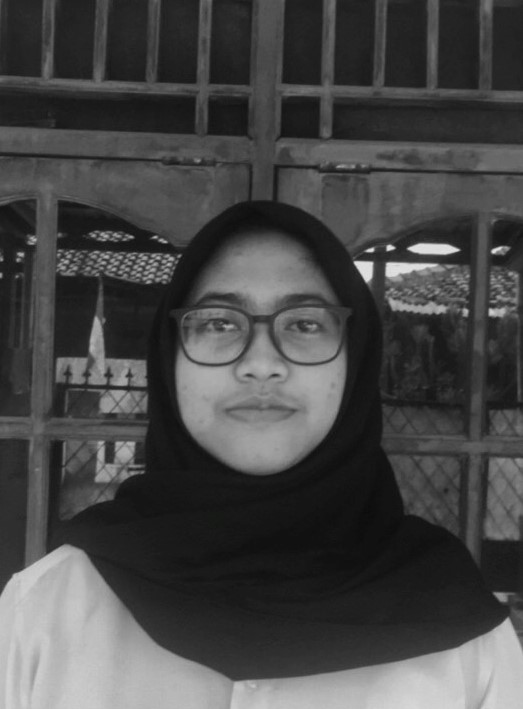

Perkenalkan saya merupakan mahasiswa sistem informasi UPN Veteran Jawa Timur, ini adalah website yang saya buat guna menyelesaikan tugas dari dosen saya, berikut di bawah ini merupakan informasi lengkap diri saya :
 Nama : Annisa Lusyani Zahra
Tempat, Tanggal Lahir : Depok, 14 September 2001
Alamat : Jl. Puri Gianyar No. 36
Hobi : Music, Movies, Games
NPM : 20082010153
Kelas : Paralel E
Program Studi : Sistem Informasi
Fakultas : Ilmu Komputer
PTN : Universitas Pembangunan Nasional "Veteran" Jawa Timur